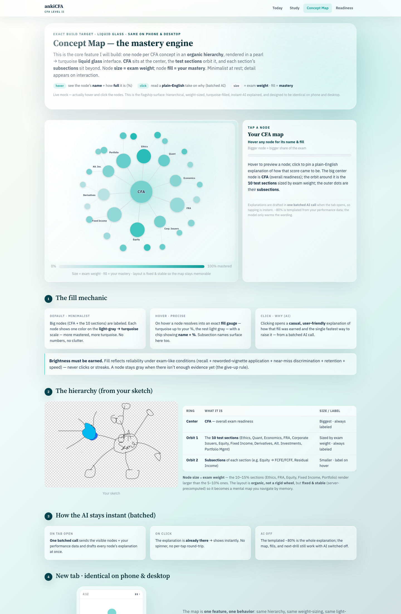
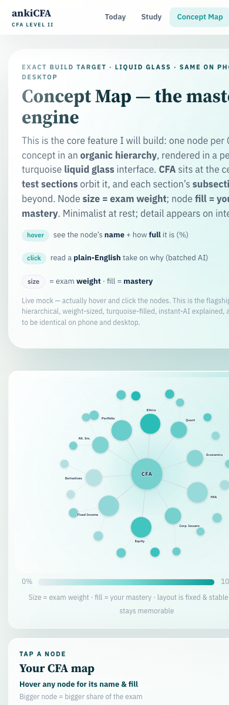

Perfect Feature: Concept Map Mastery Engine
This packet preserves the exact approved feature direction for production: pearl-to-turquoise liquid glass Concept Map, identical behavior on desktop and Android, with no degradation from the current Lavish reference.
Desktop Screenshot

Mobile Screenshot

Production Source Code Snapshot
The full frozen HTML/CSS/JS source is saved as .lavish/perfect-feature.html. It is also embedded below for review in this PDF packet.
<!DOCTYPE html>
<html lang="en">
<head>
<meta charset="utf-8" />
<meta name="viewport" content="width=device-width, initial-scale=1" />
<title>ankiCFA — Concept Map (Mastery Engine) · interactive spec</title>
<link rel="preconnect" href="https://fonts.googleapis.com" />
<link rel="preconnect" href="https://fonts.gstatic.com" crossorigin />
<link href="https://fonts.googleapis.com/css2?family=IBM+Plex+Sans:wght@400;500;600;700&family=Source+Serif+4:opsz,wght@8..60,400;8..60,600;8..60,700&family=IBM+Plex+Mono:wght@400;500&display=swap" rel="stylesheet" />
<style>
:root{
--ink:#122B46; --muted:#4D5C6D; --faint:#8b97a4;
--line:#E7EBEF; --surface:#F6F8FA; --bg:#ffffff;
--turq:#14B8B1; --turq-deep:#0E9C97; --turq-soft:#E4F6F5;
--empty:#E9EDF1; --accent:#DA5C01;
--sans:'IBM Plex Sans',system-ui,-apple-system,Segoe UI,Roboto,sans-serif;
--serif:'Source Serif 4',Georgia,serif;
--mono:'IBM Plex Mono',ui-monospace,Menlo,monospace;
}
*{box-sizing:border-box;}
html,body{margin:0; padding:0;}
body{font-family:var(--sans); color:var(--ink); background:var(--surface); font-size:15px; line-height:1.55; -webkit-font-smoothing:antialiased;}
.wrap{max-width:1160px; margin:0 auto; padding:0 20px 120px;}
h1,h2,h3,.serif{font-family:var(--serif);}
h2{font-size:24px; font-weight:600; margin:0 0 6px; letter-spacing:-.01em;}
h3{font-size:18px; font-weight:600; margin:0 0 4px;}
p{margin:0 0 12px;}
.eyebrow{font-size:11px; font-weight:700; letter-spacing:.15em; text-transform:uppercase; color:var(--turq-deep);}
.meta{font-size:12px; color:var(--faint);}
code,.mono{font-family:var(--mono); font-size:.85em;}
.pill{display:inline-block; padding:2px 9px; border-radius:100px; font-size:11px; font-weight:600; white-space:nowrap;}
.pill.turq{background:var(--turq-soft); color:var(--turq-deep);}
.pill.soft{background:var(--surface); color:var(--muted); border:1px solid var(--line);}
.pill.navy{background:var(--ink); color:#fff;}
.appbar{position:relative; z-index:40; background:#ffffff; border-bottom:1px solid var(--line);}
.appbar-in{max-width:1160px; margin:0 auto; padding:9px 20px; display:flex; align-items:center; gap:14px; flex-wrap:wrap;}
.brand{font-family:var(--serif); font-weight:700; font-size:17px; color:var(--ink); min-width:0;}
.brand small{display:block; font-family:var(--sans); font-weight:600; font-size:9px; letter-spacing:.16em; color:var(--turq-deep); text-transform:uppercase;}
.tabs{display:flex; gap:2px; margin-left:auto; flex-wrap:wrap;}
.tabs a{text-decoration:none; color:var(--muted); font-size:13px; font-weight:600; padding:7px 12px; border-radius:8px;}
.tabs a:hover{background:var(--surface);}
.tabs a.on{color:var(--turq-deep); background:var(--turq-soft);}
header.hero{padding:34px 0 6px;}
header.hero h1{font-size:32px; line-height:1.1; margin:6px 0 10px;}
header.hero .lede{font-size:16px; color:var(--muted); max-width:770px;}
.howto{display:flex; gap:18px; flex-wrap:wrap; margin-top:14px;}
.howto div{font-size:13px; color:var(--muted); display:flex; gap:7px; align-items:center;}
.howto b{color:var(--ink);}
section{margin-top:38px;}
.sec-head{display:flex; align-items:baseline; gap:12px; flex-wrap:wrap; margin-bottom:14px;}
.sec-head .n{font-family:var(--serif); font-size:13px; font-weight:700; color:#fff; background:var(--ink); width:28px; height:28px; border-radius:50%; display:inline-flex; align-items:center; justify-content:center; flex:0 0 auto;}
.card{background:#fff; border:1px solid var(--line); border-radius:14px; padding:18px;}
.grid{display:grid; gap:16px;}
.g2{grid-template-columns:repeat(2,minmax(0,1fr));}
.g3{grid-template-columns:repeat(3,minmax(0,1fr));}
.g2>*,.g3>*{min-width:0;}
@media(max-width:820px){.g2,.g3{grid-template-columns:minmax(0,1fr);}}
.stage{display:grid; grid-template-columns:minmax(0,1.7fr) minmax(0,1fr); gap:16px; align-items:stretch;}
@media(max-width:940px){.stage{grid-template-columns:minmax(0,1fr);}}
.mapbox{background:linear-gradient(180deg,#ffffff,#fbfdfd); border:1px solid var(--line); border-radius:16px; padding:6px; overflow:hidden; position:relative; box-shadow:0 1px 0 rgba(18,43,70,.02);}
.mapbox svg{width:100%; height:auto; display:block; touch-action:manipulation;}
.node{cursor:pointer;}
.node .rest{transition:opacity .18s ease;}
.node .fillg{opacity:0; transition:opacity .2s ease;}
.node .ring{opacity:0; transition:opacity .18s ease;}
.node .halo{opacity:0; transition:opacity .2s ease;}
.node.hot .rest{opacity:0;}
.node.hot .fillg{opacity:1;}
.node.hot .ring{opacity:1;}
.node.hot .halo{opacity:.16;}
.node.sel .rest{opacity:0;}
.node.sel .fillg{opacity:1;}
.node.sel .ring{opacity:1;}
.node.sel .halo{opacity:.10;}
.tlabel{font-family:var(--sans); font-size:12.5px; font-weight:600; fill:var(--ink); paint-order:stroke; stroke:#ffffff; stroke-width:3.2px; stroke-linejoin:round;}
.clabel{font-family:var(--sans); font-weight:700; fill:var(--ink); letter-spacing:.04em; paint-order:stroke; stroke:#ffffff; stroke-width:3px; stroke-linejoin:round;}
.legendbar{height:12px; border-radius:100px; background:linear-gradient(90deg,var(--empty),var(--turq)); border:1px solid var(--line);}
.mapcap{padding:2px 12px 8px; text-align:center;}
.panel{background:#fff; border:1px solid var(--line); border-radius:16px; padding:18px; display:flex; flex-direction:column; min-width:0;}
.panel .ptitle{font-family:var(--serif); font-size:20px; font-weight:700; margin:0;}
.panel .ppct{font-size:13px; color:var(--turq-deep); font-weight:700; margin-top:2px;}
.panel .pmeta{font-size:12px; color:var(--faint); margin-top:2px;}
.gauge{height:10px; border-radius:100px; background:var(--empty); overflow:hidden; margin:12px 0 4px;}
.gauge > i{display:block; height:100%; background:linear-gradient(90deg,var(--turq),var(--turq-deep)); width:0; transition:width .35s ease;}
.panel .expl{font-size:14px; color:var(--ink); margin-top:12px; line-height:1.6;}
.panel .drill{margin-top:auto; padding-top:12px;}
.panel .drillchip{display:inline-block; background:var(--turq-soft); color:var(--turq-deep); border-radius:10px; padding:9px 12px; font-size:13px; font-weight:600;}
.aitag{margin-top:12px; font-size:11.5px; color:var(--faint); border-top:1px dashed var(--line); padding-top:10px;}
.placeholder{color:var(--faint); font-size:14px;}
ul.tight{margin:8px 0 0; padding-left:18px;} ul.tight li{margin:5px 0;}
.kicker{font-size:11px; font-weight:700; letter-spacing:.1em; text-transform:uppercase; color:var(--faint); margin-bottom:6px;}
.callout{background:#fff; border:1px solid var(--line); border-left:4px solid var(--turq); border-radius:0 12px 12px 0; padding:14px 16px;}
.refrow{display:grid; grid-template-columns:minmax(0,1fr) minmax(0,1.3fr); gap:16px; align-items:center;}
@media(max-width:820px){.refrow{grid-template-columns:minmax(0,1fr);}}
.refrow img{width:100%; border-radius:12px; border:1px solid var(--line); background:#fff;}
.phoneframe{max-width:250px; margin:0 auto; border:1px solid var(--line); border-radius:26px; padding:10px; background:#fff; box-shadow:0 10px 28px rgba(18,43,70,.12);}
.phoneframe .scr{border-radius:18px; overflow:hidden; border:1px solid var(--line);}
.ph-top{background:#fff; border-bottom:1px solid var(--line); padding:8px 10px; font-size:10px; display:flex; justify-content:space-between; color:var(--muted);}
.ph-tabs{display:flex; border-top:1px solid var(--line);}
.ph-tabs div{flex:1; text-align:center; font-size:8.5px; padding:7px 1px; color:var(--faint);}
.ph-tabs div.on{color:var(--turq-deep); font-weight:700;}
table.tbl{width:100%; border-collapse:collapse; font-size:13px; background:#fff; border:1px solid var(--line); border-radius:12px; overflow:hidden;}
table.tbl th,table.tbl td{padding:9px 12px; text-align:left; border-bottom:1px solid var(--line); vertical-align:top;}
table.tbl th{background:var(--surface); font-size:11px; letter-spacing:.04em; text-transform:uppercase; color:var(--muted);}
table.tbl tr:last-child td{border-bottom:0;}
.tblwrap{overflow-x:auto;}
.footer-note{margin-top:38px; padding-top:16px; border-top:1px solid var(--line); font-size:12px; color:var(--faint);}
/* Liquid glass direction: pearl surfaces, turquoise depth, readable CFA intelligence. */
:root{
--pearl:#fbfaf5;
--pearl-2:#f4f7f7;
--glass:rgba(255,255,255,.62);
--glass-strong:rgba(255,255,255,.78);
--glass-edge:rgba(255,255,255,.72);
--deep-turq:#053b45;
--turq-ink:#064a54;
--shadow:0 28px 90px rgba(5,59,69,.16);
}
body{
background:
radial-gradient(circle at 12% 0%, rgba(255,255,255,.96), transparent 23rem),
radial-gradient(circle at 84% 10%, rgba(20,184,177,.22), transparent 28rem),
linear-gradient(135deg,var(--pearl) 0%, #eef9f7 40%, #d8f3ef 62%, rgba(5,59,69,.20) 100%);
}
body::before{
content:"";
position:fixed;
inset:0;
pointer-events:none;
background:
radial-gradient(circle at 18% 18%, rgba(255,255,255,.72), transparent 13rem),
radial-gradient(circle at 78% 22%, rgba(20,184,177,.20), transparent 19rem);
mix-blend-mode:screen;
}
.appbar{
background:rgba(255,255,255,.70);
backdrop-filter:blur(22px) saturate(1.25);
-webkit-backdrop-filter:blur(22px) saturate(1.25);
border-bottom:1px solid rgba(255,255,255,.62);
box-shadow:0 10px 40px rgba(5,59,69,.08);
}
.tabs a.on,
.tabs a:hover,
.pill.turq,
.panel .drillchip{
background:rgba(20,184,177,.12);
box-shadow:inset 0 1px 0 rgba(255,255,255,.65);
}
header.hero{
position:relative;
margin-top:24px;
padding:30px;
border:1px solid var(--glass-edge);
border-radius:28px;
background:
linear-gradient(135deg,rgba(255,255,255,.82),rgba(255,255,255,.42)),
radial-gradient(circle at 78% 18%, rgba(20,184,177,.18), transparent 22rem);
box-shadow:var(--shadow);
backdrop-filter:blur(26px) saturate(1.18);
-webkit-backdrop-filter:blur(26px) saturate(1.18);
overflow:hidden;
}
header.hero::after{
content:"";
position:absolute;
inset:1px;
border-radius:27px;
pointer-events:none;
background:linear-gradient(120deg,rgba(255,255,255,.70),transparent 30%,rgba(255,255,255,.18));
mask:linear-gradient(#000,transparent 70%);
}
.card,
.panel,
.mapbox,
.callout,
table.tbl,
.phoneframe{
border:1px solid var(--glass-edge);
background:var(--glass);
box-shadow:
inset 0 1px 0 rgba(255,255,255,.78),
0 20px 70px rgba(5,59,69,.12);
backdrop-filter:blur(22px) saturate(1.18);
-webkit-backdrop-filter:blur(22px) saturate(1.18);
}
.mapbox{
padding:10px;
background:
radial-gradient(circle at 22% 18%, rgba(255,255,255,.88), transparent 17rem),
radial-gradient(circle at 78% 16%, rgba(20,184,177,.18), transparent 19rem),
linear-gradient(135deg,rgba(255,255,255,.76),rgba(216,243,239,.36));
}
.mapbox svg{
border-radius:18px;
background:
radial-gradient(circle at 50% 44%, rgba(20,184,177,.10), transparent 18rem),
linear-gradient(135deg,rgba(255,255,255,.72),rgba(255,255,255,.30));
}
.panel{
background:
linear-gradient(145deg,rgba(255,255,255,.74),rgba(244,247,247,.46));
}
.panel .ptitle,
h1,h2,h3{
color:#0b2f38;
}
.eyebrow,
.brand small,
.panel .ppct{
color:var(--turq-ink);
}
.gauge{
background:rgba(233,237,241,.72);
box-shadow:inset 0 1px 2px rgba(5,59,69,.08);
}
.gauge > i,
.legendbar{
background:linear-gradient(90deg,#e8edf0,#7edbd6,#0e9c97);
}
.sec-head .n{
background:linear-gradient(135deg,var(--turq-ink),var(--deep-turq));
box-shadow:0 10px 30px rgba(5,59,69,.18);
}
.callout{
background:rgba(255,255,255,.58);
border-left-color:var(--turq);
}
table.tbl th{
background:rgba(255,255,255,.48);
}
.phoneframe .scr,
.ph-top,
.ph-tabs{
background:rgba(255,255,255,.62);
backdrop-filter:blur(18px);
-webkit-backdrop-filter:blur(18px);
}
.tlabel,.clabel{
stroke:rgba(255,255,255,.86);
}
@media(max-width:720px){
header.hero{padding:22px;}
.wrap{padding-left:14px; padding-right:14px;}
}
</style>
</head>
<body>
<div class="appbar">
<div class="appbar-in">
<div class="brand">ankiCFA <small>CFA Level II</small></div>
<nav class="tabs">
<a href="#">Today</a>
<a href="#">Study</a>
<a href="#stage" class="on">Concept Map</a>
<a href="#">Readiness</a>
</nav>
</div>
</div>
<div class="wrap">
<header class="hero">
<div class="eyebrow">Exact build target · liquid glass · same on phone & desktop</div>
<h1>Concept Map — the mastery engine</h1>
<p class="lede">This is the core feature I will build: one node per CFA concept in an <b>organic hierarchy</b>, rendered in a pearl → turquoise <b>liquid glass</b> interface. <b>CFA</b> sits at the center, the <b>test sections</b> orbit it, and each section’s <b>subsections</b> sit beyond. Node <b>size = exam weight</b>; node <b>fill = your mastery</b>. Minimalist at rest; detail appears on interaction.</p>
<div class="howto">
<div><span class="pill turq">hover</span> <span>see the node’s <b>name</b> + how <b>full</b> it is (%)</span></div>
<div><span class="pill turq">click</span> <span>read a <b>plain-English</b> take on why (batched AI)</span></div>
<div><span class="pill soft">size</span> <span>= exam <b>weight</b> · fill = <b>mastery</b></span></div>
</div>
<p class="meta" style="margin-top:12px;">Live mock — actually hover and click the nodes. This is the flagship surface: hierarchical, weight-sized, turquoise-filled, instant-AI explained, and designed to be identical on phone and desktop.</p>
</header>
<!-- INTERACTIVE STAGE -->
<section id="stage">
<div class="stage">
<div class="mapbox">
<svg id="map" viewBox="0 0 1000 740" role="img" aria-label="Interactive CFA concept mastery map">
<defs id="defs">
<linearGradient id="turqfill" x1="0" y1="0" x2="0" y2="1">
<stop offset="0" stop-color="#31CFC7"/><stop offset="1" stop-color="#0E9C97"/>
</linearGradient>
<radialGradient id="centerglow" cx="50%" cy="50%" r="50%">
<stop offset="0" stop-color="#14B8B1" stop-opacity="0.14"/><stop offset="1" stop-color="#14B8B1" stop-opacity="0"/>
</radialGradient>
<filter id="soft" x="-50%" y="-50%" width="200%" height="200%">
<feDropShadow dx="0" dy="2" stdDeviation="3.2" flood-color="#0e3a46" flood-opacity="0.18"/>
</filter>
<filter id="halob" x="-70%" y="-70%" width="240%" height="240%">
<feGaussianBlur stdDeviation="6"/>
</filter>
</defs>
<circle cx="500" cy="366" r="170" fill="url(#centerglow)"></circle>
<g id="edges" fill="none" stroke-linecap="round"></g>
<g id="nodes"></g>
<g id="tip" opacity="0" pointer-events="none" transform="translate(-4000,-4000)">
<rect id="tipbg" rx="8" ry="8" fill="#122B46"></rect>
<text id="tipname" x="0" y="-40" text-anchor="middle" font-family="IBM Plex Sans, sans-serif" font-size="15" font-weight="600" fill="#fff"></text>
<text id="tippct" x="0" y="-20" text-anchor="middle" font-family="IBM Plex Sans, sans-serif" font-size="13" font-weight="700" fill="#4CE0D8"></text>
</g>
</svg>
<div style="display:flex; align-items:center; gap:10px; padding:6px 12px 2px;">
<span class="meta">0%</span>
<div class="legendbar" style="flex:1;"></div>
<span class="meta">100% mastered</span>
</div>
<div class="mapcap"><span class="meta">Size = exam weight · fill = your mastery · layout is fixed & stable so the map stays memorable</span></div>
</div>
<aside class="panel" id="panel">
<div class="eyebrow" id="p-eb">Tap a node</div>
<h3 class="ptitle" id="p-title">Your CFA map</h3>
<div class="ppct" id="p-pct">Hover any node for its name & fill</div>
<div class="pmeta" id="p-meta">Bigger node = bigger share of the exam</div>
<div class="gauge"><i id="p-gauge"></i></div>
<p class="expl placeholder" id="p-expl">Hover to preview a node; click to pin a plain-English explanation of how that score came to be. The big center node is <b>CFA</b> (overall readiness); the orbit around it is the <b>10 test sections</b> sized by exam weight; the outer dots are their <b>subsections</b>.</p>
<div class="drill" id="p-drillwrap" style="display:none;"><span class="drillchip" id="p-drill"></span></div>
<div class="aitag" id="p-ai">Explanations are drafted in <b>one batched AI call</b> when the tab opens, so tapping is instant. ~80% is templated from your performance data; the model only warms the wording.</div>
</aside>
</div>
</section>
<!-- FILL MECHANIC -->
<section id="mechanic">
<div class="sec-head"><span class="n">1</span><h2>The fill mechanic</h2></div>
<div class="grid g3">
<div class="card">
<div class="kicker">Default · minimalist</div>
<p style="font-size:13.5px; margin:0;">Big nodes (CFA + the 10 sections) are labeled. Each node shows one color on the <b>light-gray → turquoise</b> scale — more mastered, more turquoise. No numbers, no clutter.</p>
</div>
<div class="card">
<div class="kicker">Hover · precise</div>
<p style="font-size:13.5px; margin:0;">On hover a node resolves into an exact <b>fill gauge</b> — turquoise up to your %, the rest light gray — with a chip showing <b>name + %</b>. Subsection names surface here too.</p>
</div>
<div class="card">
<div class="kicker">Click · why (AI)</div>
<p style="font-size:13.5px; margin:0;">Clicking opens a <b>casual, user-friendly</b> explanation of how that fill was earned and the single fastest way to raise it — from a batched AI call.</p>
</div>
</div>
<div class="callout" style="margin-top:16px;"><b>Brightness must be earned.</b> Fill reflects reliability under exam-like conditions (recall + reworded-vignette application + near-miss discrimination + retention + speed) — never clicks or streaks. A node stays gray when there isn’t enough evidence yet (the give-up rule).</div>
</section>
<!-- HIERARCHY -->
<section id="hierarchy">
<div class="sec-head"><span class="n">2</span><h2>The hierarchy (from your sketch)</h2></div>
<div class="refrow">
<div>
<img src="./sketch.png" alt="user sketch of the concept map" />
<p class="meta" style="text-align:center; margin-top:6px;">Your sketch</p>
</div>
<div>
<div class="tblwrap"><table class="tbl">
<tr><th>Ring</th><th>What it is</th><th>Size / label</th></tr>
<tr><td><b>Center</b></td><td><b>CFA</b> — overall exam readiness</td><td>Biggest · always labeled</td></tr>
<tr><td><b>Orbit 1</b></td><td>The <b>10 test sections</b> (Ethics, Quant, Economics, FRA, Corporate Issuers, Equity, Fixed Income, Derivatives, Alt. Investments, Portfolio Mgmt)</td><td>Sized by exam weight · always labeled</td></tr>
<tr><td><b>Orbit 2</b></td><td><b>Subsections</b> of each section (e.g. Equity → FCFE/FCFF, Residual Income)</td><td>Smaller · label on hover</td></tr>
</table></div>
<p style="font-size:13px; color:var(--muted); margin-top:12px;"><b>Node size ∝ exam weight</b> — the 10–15% sections (Ethics, FRA, Equity, Fixed Income, Portfolio) render larger than the 5–10% ones. The layout is <b>organic, not a rigid wheel</b>, but <b>fixed & stable</b> (server-precomputed) so it becomes a mental map you navigate by memory.</p>
</div>
</div>
</section>
<!-- API / batching -->
<section id="api">
<div class="sec-head"><span class="n">3</span><h2>How the AI stays instant (batched)</h2></div>
<div class="grid g3">
<div class="card"><div class="kicker">On tab open</div><p style="font-size:13px; margin:0;"><b>One batched call</b> sends the visible nodes + your performance data and drafts every node’s explanation at once.</p></div>
<div class="card"><div class="kicker">On click</div><p style="font-size:13px; margin:0;">The explanation is <b>already there</b> → shows instantly. No spinner, no per-tap round-trip.</p></div>
<div class="card"><div class="kicker">AI off</div><p style="font-size:13px; margin:0;">The templated ~80% is the whole explanation; the map, fills, and next-drill still work with AI switched off.</p></div>
</div>
</section>
<!-- CROSS PLATFORM -->
<section id="parity">
<div class="sec-head"><span class="n">4</span><h2>New tab · identical on phone & desktop</h2></div>
<div class="refrow">
<div class="phoneframe">
<div class="scr">
<div class="ph-top"><span>4:12</span><span>▮▮ ▾</span></div>
<svg viewBox="0 0 260 300" style="display:block; width:100%; background:#fff;">
<g stroke="#D7DEE4" fill="none" stroke-linecap="round"><line x1="130" y1="150" x2="132" y2="58"/><line x1="130" y1="150" x2="214" y2="118"/><line x1="130" y1="150" x2="192" y2="224"/><line x1="130" y1="150" x2="62" y2="222"/><line x1="130" y1="150" x2="46" y2="116"/></g>
<circle cx="132" cy="58" r="18" fill="#7fd8d3"/>
<circle cx="214" cy="118" r="13" fill="#c9d3da"/>
<circle cx="192" cy="224" r="17" fill="#a7e0dc"/>
<circle cx="62" cy="222" r="12" fill="#dfe6ea"/>
<circle cx="46" cy="116" r="16" fill="#8fdbd6"/>
<circle cx="130" cy="150" r="30" fill="#3cc2bc"/>
<text x="130" y="155" text-anchor="middle" font-family="Source Serif 4, serif" font-size="14" font-weight="700" fill="#fff">CFA</text>
</svg>
<div class="ph-tabs"><div>Today</div><div>Study</div><div class="on">Map</div><div>Readiness</div></div>
</div>
</div>
<div>
<p style="color:var(--muted)">The map is <b>one feature, one behavior</b>: same hierarchy, same weight-sizing, same light-gray→turquoise fill, same hover (name + %) and tap (batched-AI explanation) on both platforms. The phone adds <b>pinch-to-zoom + pan</b> for the outer subsection orbit; the desktop uses hover + scroll-zoom.</p>
<ul class="tight">
<li>Rendered from the <b>same shared data</b> the desktop uses (one engine, one layout).</li>
<li>Lives on its own <b>Concept Map</b> tab — bottom nav (phone), app bar (desktop).</li>
<li>Minimal chrome — the map <em>is</em> the screen.</li>
</ul>
</div>
</div>
</section>
<div class="footer-note">
Design source: your explicitly-requested look (minimalist, weight-sized nodes, light-gray→turquoise mastery fill) on the project’s CFA design system (navy chrome, IBM Plex Sans / Source Serif 4). Turquoise is the <b>mastery / progress</b> semantic, distinct from the orange CTA accent. Polish added: soft node shadows, gradient fill, hover halo, center glow, crisper labels — the core mechanic is unchanged.
</div>
</div>
<script>
(function(){
var SVGNS="http://www.w3.org/2000/svg";
var CX=500, CY=366, RC=60, R2=306, EMPTY="#E9EDF1";
function el(tag,attrs){var e=document.createElementNS(SVGNS,tag); for(var k in attrs){e.setAttribute(k,attrs[k]);} return e;}
function mix(m){var g=[0xE9,0xED,0xF1], t=[0x14,0xB8,0xB1]; var c=g.map(function(gv,i){return Math.round(gv+(t[i]-gv)*m);}); return "rgb("+c[0]+","+c[1]+","+c[2]+")";}
function rad(d){return d*Math.PI/180;}
// weight (w) drives SIZE (exam weight); band is the official range; ang/r1j make the layout organic (asymmetric)
var topics=[
{k:"Ethics", full:"Ethics & Professional Standards", m:.90, w:12, band:"10–15%", ang:274, r1j:-6, subs:[["Standards I–VII",.94,-12],["GIPS",.80,12]]},
{k:"Quant", full:"Quantitative Methods", m:.62, w:7.5, band:"5–10%", ang:306, r1j:10, subs:[["Regression",.55,-11],["Time-Series",.68,11]]},
{k:"Economics", full:"Economics", m:.45, w:7.5, band:"5–10%", ang:342, r1j:-4, subs:[["Currency",.40,-11],["Growth",.50,11]]},
{k:"FRA", full:"Financial Reporting & Analysis", m:.38, w:12.5, band:"10–15%", ang:20, r1j:8, subs:[["Intercorporate",.30,-12],["Pensions",.45,12]]},
{k:"Corp. Issuers", full:"Corporate Issuers", m:.55, w:7.5, band:"5–10%", ang:58, r1j:-9, subs:[["Capital Structure",.50,-11],["ESG",.60,11]]},
{k:"Equity", full:"Equity Valuation", m:.78, w:12.5, band:"10–15%", ang:96, r1j:7, subs:[["FCFE / FCFF",.82,-12],["Residual Income",.60,12]]},
{k:"Fixed Income", full:"Fixed Income", m:.41, w:12.5, band:"10–15%", ang:140, r1j:-8, subs:[["Term Structure",.35,-12],["Credit",.47,12]]},
{k:"Derivatives", full:"Derivatives", m:.23, w:7.5, band:"5–10%", ang:176, r1j:5, subs:[["Forwards / Futures",.20,-11],["Options",.26,11]]},
{k:"Alt. Inv.", full:"Alternative Investments", m:.50, w:7.5, band:"5–10%", ang:212, r1j:11, subs:[["Real Estate",.52,-11],["Private Equity",.48,11]]},
{k:"Portfolio", full:"Portfolio Management", m:.60, w:12.5, band:"10–15%", ang:240, r1j:-6, subs:[["Active Mgmt",.55,-12],["Risk",.66,12]]}
];
var CFA_M=.55;
var topicR=function(w){return 20 + w*1.55;}; // size ∝ exam weight
var subR=function(w){return 12 + w*0.5;};
function explain(full,pct,kind,parent){
var bespoke={
"Derivatives":"You're at "+pct+"% on Derivatives — the dimmest node on your map. Recall of the payoff formulas is fine, but the moment a vignette asks you to *hedge* instead of *price*, it slips. That gap is what keeps this gray. Two quick 'hedge-vs-speculate' near-miss drills would start filling it.",
"Equity Valuation":"You're at "+pct+"% on Equity Valuation — one of your strongest areas, and it's a heavy 10–15% section, so this fill really counts. DDM and FCFE are basically automatic. The last stretch to full turquoise is Residual Income under reworded vignettes; nail 2 of those and it tops out.",
"Ethics & Professional Standards":"You're at "+pct+"% on Ethics — nearly full, and it's a high-weight section. You reliably spot breach-of-duty in near-miss pairs. Keep it warm with the odd GIPS refresher so it doesn't fade before exam day.",
"Financial Reporting & Analysis":"You're at "+pct+"% on FRA — your weakest core section, and one of the biggest on the exam, so it's the highest-leverage thing to fix. Intercorporate investments are the drag: you know the labels but pick the wrong consolidation method under time pressure. Method-selection drills are the fastest lift."
};
if(bespoke[full]) return bespoke[full];
var recall = pct>=70?"solid":(pct>=45?"decent":"shaky");
if(kind==="sub") return "You're at "+pct+"% on "+full+" (under "+parent+"). Recall here is "+recall+", but it bends on exam-style wording — that's what's holding the fill back. A few targeted "+full+" drills push it toward turquoise fastest.";
if(kind==="cfa") return "This is your overall CFA readiness — about "+pct+"%. It's the weight-adjusted roll-up of every section below, so the biggest nodes move it most. Right now, filling your dimmest heavy sections (FRA, then Fixed Income) moves the center far more than topping up ones already turquoise.";
return "You're at "+pct+"% on "+full+". Recall is "+recall+", but "+full+" still slips on reworded vignettes — that's what keeps it from filling. A short set of "+full+" near-miss drills is the fastest way to more turquoise.";
}
function drillFor(full,kind){ return kind==="cfa" ? "▶ Study your 2 dimmest heavy sections first" : "▶ Start a "+full+" near-miss drill"; }
var defs=document.getElementById("defs");
var gEdges=document.getElementById("edges");
var gNodes=document.getElementById("nodes");
var tip=document.getElementById("tip"), tipbg=document.getElementById("tipbg"), tipname=document.getElementById("tipname"), tippct=document.getElementById("tippct");
var svg=document.getElementById("map");
var uid=0;
function addNode(x,y,r,m,name,kind,parent,band,persistentLabel,labelAngle){
uid++; var cid="clip"+uid;
var cp=el("clipPath",{id:cid}); cp.appendChild(el("circle",{cx:x,cy:y,r:r})); defs.appendChild(cp);
var g=el("g",{class:"node"});
// soft hover halo (blurred, under everything)
g.appendChild(el("circle",{class:"halo",cx:x,cy:y,r:r+15,fill:"#14B8B1",filter:"url(#halob)"}));
// disc = rest + fill + ring (carries the drop shadow)
var disc=el("g",{filter:"url(#soft)"});
disc.appendChild(el("circle",{class:"rest",cx:x,cy:y,r:r,fill:mix(m),stroke:kind==="cfa"?"#BFE4E1":"#D7DEE4","stroke-width":kind==="cfa"?2:1}));
var fg=el("g",{class:"fillg","clip-path":"url(#"+cid+")"});
fg.appendChild(el("rect",{x:x-r,y:y-r,width:2*r,height:2*r,fill:EMPTY}));
var fh=2*r*m;
fg.appendChild(el("rect",{x:x-r,y:y+r-fh,width:2*r,height:fh,fill:"url(#turqfill)"}));
fg.appendChild(el("circle",{cx:x,cy:y,r:r,fill:"none",stroke:"#ffffff","stroke-width":1,"stroke-opacity":.5}));
disc.appendChild(fg);
disc.appendChild(el("circle",{class:"ring",cx:x,cy:y,r:r+3,fill:"none",stroke:"#0E9C97","stroke-width":3}));
g.appendChild(disc);
if(kind==="cfa"){
var t=el("text",{class:"clabel",x:x,y:y+7,"text-anchor":"middle","font-size":21}); t.textContent="CFA"; g.appendChild(t);
} else if(persistentLabel){
var out=r+13, lx=x+Math.cos(labelAngle)*out, ly=y+Math.sin(labelAngle)*out;
var anchor=Math.cos(labelAngle)>0.25?"start":(Math.cos(labelAngle)<-0.25?"end":"middle");
var tl=el("text",{class:"tlabel",x:lx,y:ly+4,"text-anchor":anchor}); tl.textContent=name; g.appendChild(tl);
}
var pct=Math.round(m*100);
function enter(){ g.classList.add("hot"); showTip(x,y,r,name,pct); setPanel(name,pct,m,kind,parent,band,false); }
function leave(){ g.classList.remove("hot"); hideTip(); }
function click(){ document.querySelectorAll(".node.sel").forEach(function(n){n.classList.remove("sel");}); g.classList.add("sel"); setPanel(name,pct,m,kind,parent,band,true); }
g.addEventListener("mouseenter",enter); g.addEventListener("mouseleave",leave);
g.addEventListener("click",click); g.addEventListener("touchstart",function(){enter();click();},{passive:true});
gNodes.appendChild(g);
}
function showTip(x,y,r,name,pct){
tip.setAttribute("transform","translate(0,0)");
tipname.textContent=name; tippct.textContent=pct+"% mastered";
var above=(y-r-42)>6, ty=above?(y-r-8):(y+r+42);
tipname.setAttribute("x",x); tipname.setAttribute("y",ty-16);
tippct.setAttribute("x",x); tippct.setAttribute("y",ty+7);
var w=Math.max(name.length*8.6, 96)+26;
tipbg.setAttribute("x",x-w/2); tipbg.setAttribute("y",ty-35); tipbg.setAttribute("width",w); tipbg.setAttribute("height",48);
tip.setAttribute("opacity","1"); svg.appendChild(tip);
}
function hideTip(){ tip.setAttribute("opacity","0"); tip.setAttribute("transform","translate(-4000,-4000)"); }
function setPanel(name,pct,m,kind,parent,band,pinned){
document.getElementById("p-eb").textContent=pinned?"Explanation":(kind==="cfa"?"Overall":(kind==="sub"?("Subsection · "+parent):"Test section"));
document.getElementById("p-title").textContent=name;
document.getElementById("p-pct").textContent=pct+"% mastered · "+(pct>=70?"exam-ready":(pct>=45?"getting there":"needs work"));
document.getElementById("p-meta").textContent=kind==="cfa"?"Weight-adjusted across all 10 sections":(kind==="sub"?("Subsection of "+parent):("Exam weight "+band+" of your grade"));
document.getElementById("p-gauge").style.width=pct+"%";
var ex=document.getElementById("p-expl"); ex.classList.remove("placeholder"); ex.textContent=explain(name,pct,kind,parent);
var dw=document.getElementById("p-drillwrap"); document.getElementById("p-drill").textContent=drillFor(name,kind); dw.style.display="block";
}
// positions (organic: per-topic angle + orbit jitter)
topics.forEach(function(tp){
var a=rad(tp.ang), R1=196+tp.r1j;
tp._x=CX+Math.cos(a)*R1; tp._y=CY+Math.sin(a)*R1; tp._a=a; tp._r=topicR(tp.w);
gEdges.appendChild(el("line",{x1:CX,y1:CY,x2:tp._x,y2:tp._y,stroke:"#D3DBE1","stroke-width":(1.1+tp.w*0.12).toFixed(2)}));
tp.subs.forEach(function(s){
var sa=rad(tp.ang+s[2]), R2j=R2+(s[2]<0?-8:8);
s._x=CX+Math.cos(sa)*R2j; s._y=CY+Math.sin(sa)*R2j;
gEdges.appendChild(el("line",{x1:tp._x,y1:tp._y,x2:s._x,y2:s._y,stroke:"#DFE5EA","stroke-width":1.4}));
});
});
// draw subs, then topics, then center (center on top)
topics.forEach(function(tp){ tp.subs.forEach(function(s){ addNode(s._x,s._y,subR(tp.w),s[1],s[0],"sub",tp.full,tp.band,false,0); }); });
topics.forEach(function(tp){ addNode(tp._x,tp._y,tp._r,tp.m,tp.k,"topic",null,tp.band,true,tp._a); });
addNode(CX,CY,RC,CFA_M,"CFA","cfa",null,null,false,0);
})();
</script>
</body>
</html>